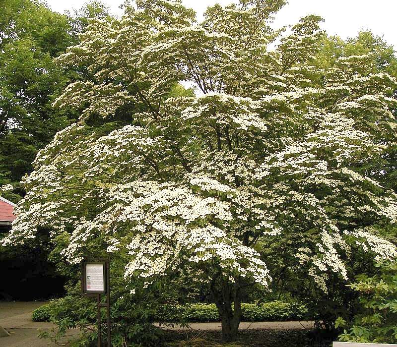

Cornus — Dogwood (Cornus)
A showy forest-edge medic who improves the soil for everyone around it and decorates the battlefield with clouds of white bracts while quietly being one of the hardest woods on the block.
Combat flavor
Despite its graceful looks, dogwood wood is brutally hard — the contradiction between delicate flowers and iron-dense timber makes it the Support unit that hits back surprisingly hard. Its soil-enrichment trait maps naturally to an aura that buffs adjacent allies.
Real-world facts
Typical / max height6–10 m typical; up to 12 m in the wild
Lifespan~80 years maximum (relatively short-lived)
Wood820 kg/m³ air-dry; Janka ~2150 lbf (seasoned) — one of the hardest temperate hardwoods, historically used for tool handles, golf club heads, and loom shuttles
Growth speedMedium
Ecology / notable traitsForest-edge species; leaf litter decomposes faster than co-occurring species, enriching soil (support/aura flavor); flowering dogwood (C. florida) suffers from dogwood anthracnose disease; ornamental bracts attract pollinators; berries feed birds; wide genus covering shrubs to small trees; C. mas (cornelian cherry) has edible fruit used since antiquity
Gallery
